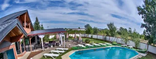
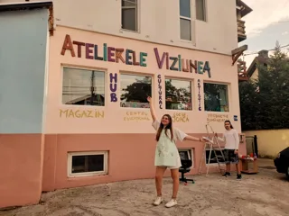
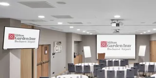
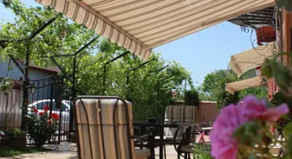
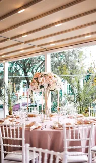

Locații de nuntă în Otopeni
- locații în director
- 8
- cu cazare în registrul SITUR
- 2
- medie ponderată Google
- 4,6 / 5
- evaluări Google
- 5.142
Cum alegi o locație în Otopeni
În Otopeni poți începe comparația cu PRIVATE MANSION (local pentru evenimente), Grădina Popânzoc (cafenea de artă), Atelierele Viziunea | HUB Cultural-Artistic | Cursuri Arte Otopeni | Hand-Made | Centru Comunitar | Grădină de Vară (centru artistic). Aceste proprietăți apar în primele poziții când luăm în calcul împreună nota și numărul de evaluări Google. Salvează adresele care vă interesează pentru a le așeza apoi alături în fișa de comparare a ofertelor.
Pentru partea de afară, avem o descriere a spațiului folosit la evenimente la PRIVATE MANSION — Închiriere pentru petreceri private. La vizionare, cere schița pentru numărul vostru de persoane, inclusiv locul unde vor sta muzicienii și pe unde intră invitații.
Dacă vin rude de departe, Vila Toparceanu are o unitate de cazare asociată în registrul SITUR. Înregistrarea pentru Topârceanu cuprinde 16 locuri de dormit în 8 spații de cazare. Întreabă câte camere pot fi păstrate pentru aceeași noapte înainte să trimiți invitaților detaliile de rezervare.
Dacă vrei să vezi două proprietăți în aceeași zi, poți continua de la Vila Toparceanu spre Yardinia din Odăile. Punctele lor sunt la 0,3 km în linie dreaptă. Deschide traseul înainte să fixezi ora celei de-a doua vizite, mai ales dacă grupul se deplasează cu autocarul.
Locații pentru vizionare
Ordinea ține cont de nota Google și de numărul evaluărilor. Cum calculăm ordinea

Fotografie a locației · Sursa fotografiei Otopeni · Local pentru evenimente
PRIVATE MANSION
Pentru o aniversare de treizeci de ani la Private Mansion, gazda petrecerii relatează că a discutat detaliile cu Robert și a primit ajutor pentru catering.
Strada Valea Păsării 1, 075100 Otopeni+40 723 293 766
Fotografie a locației · Sursa fotografiei Otopeni · Cafenea de artă
Grădina Popânzoc
Grădină-cafenea de artă în Otopeni, cu hamace, limonadă și grătar pentru grupuri. Bună pentru o petrecere restrânsă; ce să afli înainte.
Strada Belgrad 32a, 075100 Otopeni+40 745 167 353
Fotografie a locației · Sursa fotografiei Otopeni · Centru artistic
Atelierele Viziunea | HUB Cultural-Artistic | Cursuri Arte Otopeni | Hand-Made | Centru Comunitar | Grădină de Vară
Hub cultural în Otopeni, cu scenă, ateliere și grădină de vară sub sălcii; 18 evaluări de 5. Nunțile nu sunt documentate, iată ce să întrebi.
Strada Belgrad 32a, 075100 Otopeni+40 745 167 353
Fotografie a locației · Sursa fotografiei Otopeni · Local pentru evenimente
Hilton Garden Inn Aeroportul București
Hotel lângă aeroport în Otopeni, cu 4.074 de evaluări și recepție foarte lăudată; util pentru invitați veniți cu avionul, nunțile nu sunt descrise.
Bulevardul Aeroportului 13, 075150 Otopeni+40 31 403 5600
Fotografie a locației · Sursa fotografiei Otopeni · Restaurant
La Seratta
Un cuplu care și-a ținut nunta la Seratta descrie un grup de sub o sută cincizeci de persoane și amintește în mod distinct grădina și terasa.
Strada Ferme F 15, 075100 Otopeni+40 745 183 098
Fotografie a locației · Sursa fotografiei Otopeni · Bed & Breakfast
Vila Toparceanu
Vila Toparceanu. Un vizitator la Vila Topârceanu a numărat doar câteva locuri de parcare în fața clădirii și chiar el prezintă numărul ca aproximativ.
Strada George Topârceanu 11, 075100 Otopeni+40 752 011 478
Fotografie a locației · Sursa fotografiei Otopeni · Local pentru evenimente
Wish Events
Wish Events, Otopeni. La vizionare, întreabă dacă suprafața verde folosită pentru pauze poate primi și o ceremonie cu scaune.
Strada Odăii 26, 075100 Otopeni+40 784 589 293
Fotografie a locației · Sursa fotografiei Otopeni · Centru de evenimente
RIN Airport Conference Center
RIN Airport Conference Center. Un oaspete la RIN Airport spune că din camera sa vedea o curte de serviciu și că auzea instalațiile din apropiere.
Calea Bucureștilor 255A, 075100 Otopeni+40 21 350 4111
Întrebări despre locațiile din Otopeni
Unde pot dormi invitații în Otopeni?
În registrul de cazare SITUR găsim Vila Toparceanu (16 locuri de cazare), RIN Airport Conference Center (516 locuri de cazare). Verifică ce camere sunt libere pentru noaptea evenimentului.
Ce spații sunt documentate pentru evenimente în aer liber în Otopeni?
PRIVATE MANSION — Închiriere pentru petreceri private.
Care locație din Otopeni are cele mai multe evaluări Google?
Hilton Garden Inn Aeroportul București are 4.074 de evaluări în profilul Google folosit la documentare. Evaluările acoperă și alte experiențe la proprietate, inclusiv vizitele fără eveniment.
Unde apare o intrare accesibilă în Otopeni?
Profilurile Google indică o intrare accesibilă la PRIVATE MANSION, Grădina Popânzoc, La Seratta. Pentru o cununie în exterior, cere detalii despre traseul dintre intrare și zona cu scaune.
Vizionări în apropiere
- Odăile · 1 locație. Între Vila Toparceanu și Yardinia sunt 0,3 km în linie dreaptă.
- Corbeanca · 5 locații. Între PRIVATE MANSION și Cortina Garden sunt 2,4 km în linie dreaptă.
- Tamași · 1 locație. Între PRIVATE MANSION și Secret Forest Garden Corbeanca - Locatie petreceri copii la piscina in aer liber sunt 4,1 km în linie dreaptă.
Alte adrese din aceeași unitate administrativă
Yardinia (Odăile).